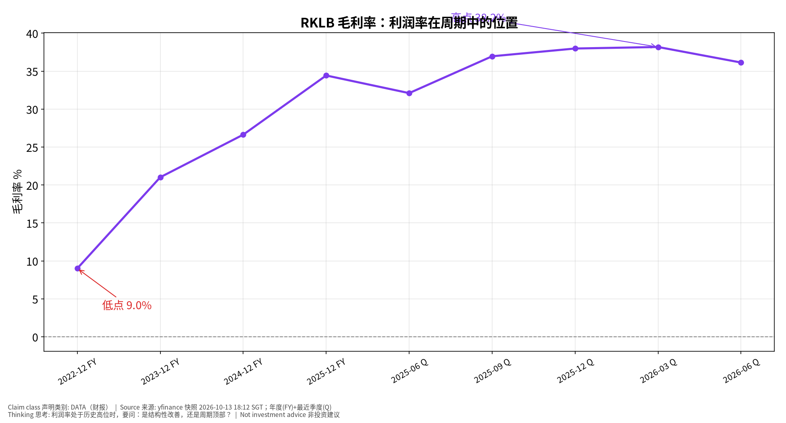
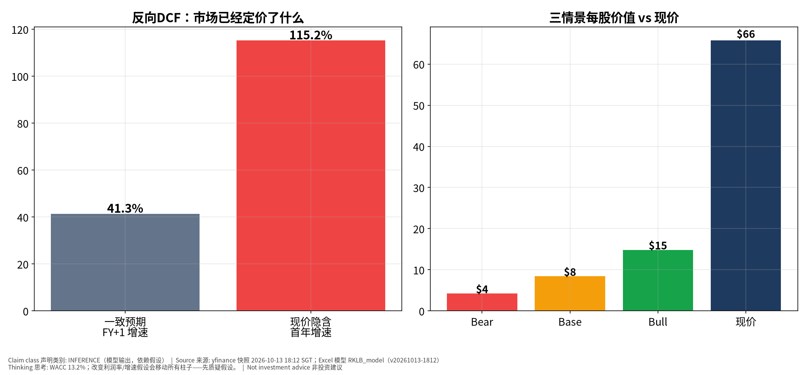
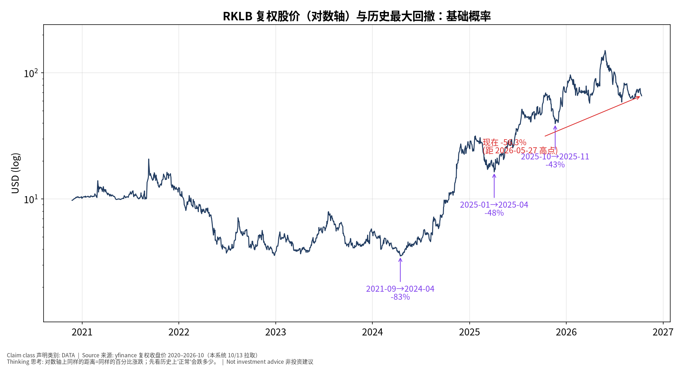

RKLB
Rocket Lab Corporation — 思考过程版（Teaching
v2.1）v20261013-2108-think
数据：yfinance 快照 2026-10-13 18:12 SGT｜模型与数字沿用
v20261013-1812（同一快照，未改动）｜非投资建议 ｜标签：事实
DATA / 市场预期 / 我们的判断 INFERENCE｜标准：MU
试点（用户已批准推广）
⏱ 30秒看懂
发生什么： Rocket Lab Corporation 现价 $65.71；距
2026-05-27 高点 -56.3%。主题：Small/medium launch + space systems
中小型发射+航天系统。和我的股票有什么关系： 现价隐含首年增速约
115.2%，一致预期 41.3%；三情景价值 $4/$8/$15。该看什么/做什么： 下次财报 2026-11-10（TENTATIVE
直至公司确认）；盯：积压订单、发射次数、Neutron里程碑、毛利率、现金消耗。
🗺 阅读地图
你有多少时间
读哪里
2 分钟
30秒卡
10 分钟
+ 七步思考 + 反方裁判
30 分钟
全部 + Excel 模型 + 原 v20261013-1812 专业报告
层级说明：L1 故事 （人人能懂）→ L2
关键数字 （带解释）→ L3
专业细节 （网页可折叠，默认收起）。
一、七步思考过程
先问对问题：谁在乎、为什么在乎 —— 主题是
Small/medium launch + space systems
中小型发射+航天系统。持有者在乎的是：Rocket
Lab是’第二个SpaceX’叙事标的，Neutron中型火箭是关键拐点；目前FCF为负，估值依赖长期市场份额假设。市场已经定价了什么 —— 反向 DCF：现价需要首年增速 ≈
115.2%，一致预期 41.3%——市场定价比分析师更乐观。P/E
数据不可用或为负（亏损）。搭因果链，每环配一个检验数据 —— 驱动 →
收入（检验：季度收入同比 62.0%）→ 毛利率（最新 36.1%）→ FCF →
价值。找每一环的断点 —— 断点：Neutron first flight &
cadence, SDA contract execution｜Neutron首飞与节奏、SDA合同执行用工具箱逐一质疑 —— 见第二节。给对立观点最强版本，再用证据裁判 —— 见第三节。写下「如果我错了，会先看到什么」 —— Neutron slip
beyond guided window; backlog growth
stalls｜Neutron超出指引窗口；积压停滞
二、质疑工具箱（真实数字）
第一性原理 First principles
是什么： 拆到最基本：价格 = 未来现金流 ÷
折现。这件事改变的是现金流还是折现率？为什么用： 避免被故事带走。用在本事件上： 价值 = 未来现金流 ÷ 折现。RKLB 的
WACC 13.2%；最新季度毛利率 36.1%；收入同比
62.0%。新闻多数改变的是现金流预期，而非折现率。✍ 轮到你： 把 Excel 里 Base 情景的利润率下调 5
个百分点，每股价值变多少？
二阶思维 Second-order
是什么： 然后呢？谁会因此改变行为？二阶、三阶效果是什么？为什么用： 一阶看自己，二阶看竞争者和客户。用在本事件上： 竞争者：SpaceX, Firefly, Relativity,
Blue Origin; satellite primes｜SpaceX、Firefly、Relativity、Blue
Origin。客户：NASA, US Space Force/SDA, commercial
constellations｜NASA、美国太空军/SDA、商业星座。若 RKLB
继续高增长，竞争者和客户会如何改变行为？✍
轮到你： 写下一个’别人会怎么反应’以及你会用什么数据看到。
反向思考 Inversion
是什么： 什么会让我错？相反结论成立需要哪些条件同时为真？为什么用： 先想怎么输。用在本事件上： 看多会错，如果：Neutron delays;
SpaceX price competition; dilution｜Neutron延期；SpaceX压价；稀释✍ 轮到你： 反过来，看空会错的条件是什么？
市场已经定价了什么 Priced-in
是什么： 共识/价格隐含了什么？只有「实际−预期」推动价格。为什么用： 只有’实际−预期’推动价格。用在本事件上： 隐含 115.2% vs 共识 41.3%；近几季 EPS
超预期：2025-09 +71% / 2025-12 +8% / 2026-03 +11% / 2026-06 -4%。✍ 轮到你： 超预期幅度的趋势说明了什么？
谁在对手盘 Counterparty
是什么： 如果我对，谁错？他们为什么会错？想不出来=可能已被定价。为什么用： 想清楚你在和谁交易。用在本事件上： 买方押：Neutron flies successfully
and wins NSSL/constellation
work｜Neutron成功并获国家安全/星座订单。卖方押：Neutron delays; SpaceX
price competition; dilution｜Neutron延期；SpaceX压价；稀释。✍ 轮到你： 你更相信哪一方？他们为什么可能错？
基础概率 Base rates
是什么： 这类事情历史上多常发生？先用基础概率，再用本次信息调整。为什么用： 先用历史，再用本次信息调整。用在本事件上： 2020
年以来最大的三次回撤：2021-09→2024-04 -83%；2025-01→2025-04
-48%；2025-10→2025-11 -43%；中位数 -48%。当前距高点
-56.3%。毛利率区间：9.0%–38.2%（本快照内）。✍
轮到你： 当前回撤和历史比算大还是小？这能说明’便宜’吗？
假设清单与证伪
Assumptions & falsifiers
是什么： 逐条写出假设，并给每条一个推翻它的可观察信号。为什么用： 把信念变成可检验的清单。用在本事件上： 见第四节。✍ 轮到你： 给每条假设加一个你会去看的数据源。
三、给对立观点最强版本，再用证据裁判
我们的观点： Rocket
Lab是’第二个SpaceX’叙事标的，Neutron中型火箭是关键拐点；目前FCF为负，估值依赖长期市场份额假设。（HYPOTHESIS）
对立观点最强版本： 1. Neutron delays; SpaceX price
competition; dilution｜Neutron延期；SpaceX压价；稀释 2. 现价 $65.71 相对
Base 价值 $8 679.8%，安全边际取决于假设 3. 历史上该股曾出现
2021-09→2024-04 -83%；2025-01→2025-04 -48%；2025-10→2025-11 -43%
的回撤
证据
支持我们
支持对立
权重
现价 $65.71 vs Base 价值 $8
✔
高
现价隐含增速 115.2% vs 一致预期 41.3%
✔
高
最近 5 季毛利率 32.1% → 36.1%
✔
中
EPS 超预期 +11% → -4%
✔
中
最新季度收入同比 +62.0%
✔
中
当前回撤 -56.3% vs 历史前三大回撤中位数 -48%
✔
低
裁判： 证据偏空方（加权 5 :
8）。这是对现有数据的机械称重，不是买卖结论；最该做的是盯住证伪清单。（我们的判断，可能出错）
四、假设清单与证伪
假设
检验数据
推翻信号
增长兑现市场隐含的 115.2%
季度收入同比（现 62.0%）
连续两季低于隐含增速的一半
毛利率维持
季报毛利率（现 36.1%）
环比下降 >3 个百分点
论点核心驱动
Backlog, launches, Neutron milestones, GM%, cash
burn｜积压订单、发射次数、Neutron里程碑、毛利率、现金消耗
Neutron slip beyond guided window; backlog growth
stalls｜Neutron超出指引窗口；积压停滞
估值假设合理
Excel WACC 13.2%
利率/β 上升使 WACC +1pp
五、怎么看这些图

利润率周期
📊 怎么看这张图
坐标/颜色： 横轴=财年(FY)/财季(Q)，纵轴=毛利率%只记住一件事： 利润率在区间中的位置决定’均值回归’风险什么会改变结论： 若下季继续创新高，结构性论点加强

反向DCF
📊 怎么看这张图
坐标/颜色： 左：灰=共识增速，红=现价隐含；右：三情景价值
vs 现价只记住一件事： 红柱高于灰柱=价格依赖超预期；现价高于
Base=安全边际薄什么会改变结论： 我们的假设若太保守，价值柱会升高——要检验模型本身

历史回撤
📊 怎么看这张图
坐标/颜色： 对数轴复权股价；紫色=历史最大回撤；红色=当前位置只记住一件事： 大跌在该股历史上是常态还是例外什么会改变结论： 若基本面恶化，历史回撤幅度是参考下限而非上限
七、推理自测（考推理，不考记忆）
✅ 自我测验 Check your understanding
Q1. 现价隐含 115.2%、共识
41.3%。如果公司下季’超预期’但只超共识不超隐含，股价可能怎样？为什么？
答案： 可能下跌或横盘：价格反映的是隐含预期，超共识不等于超隐含。
Q2. 毛利率现在 36.1%，区间 9.0%–38.2%。用’第一性原理’说明利润率下降 5pp
主要影响价值公式的哪一项？
答案： 影响分子（未来现金流），不影响分母（WACC）；对远期现金流占比高的公司影响更大。
Q3. 历史回撤中位数约 -48%，当前
-56.3%。为什么’已经跌了很多’不能单独作为买入理由？
答案： 基础概率只告诉你跌幅常见范围；是否便宜取决于现金流预期是否也变了（价格↓但价值也↓）。
八、事后推理复盘（2026-11-10
财报后填写）
环节
成立/断开
证据
学到什么
核心驱动→收入
____
____
____
收入→利润率
____
____
____
利润率→EPS/指引
____
____
____
EPS→股价
____
____
____
我的预期 vs 市场预期
____
____
____
English summary
RKLB thinking-first edition. Price $65.71; -56.3% from 2026-05-27
high. Reverse DCF: price implies ~115.2% Y1 growth vs consensus 41.3%.
Scenario values $4/$8/$15; WACC 13.2%. Base rates: largest drawdowns
since 2020: 2021-09→2024-04 -83%；2025-01→2025-04 -48%；2025-10→2025-11
-43%. Evidence weighting 5:8 (bull:bear). Falsifiers: Neutron slip
beyond guided window; backlog growth
stalls｜Neutron超出指引窗口；积压停滞. Not investment advice.